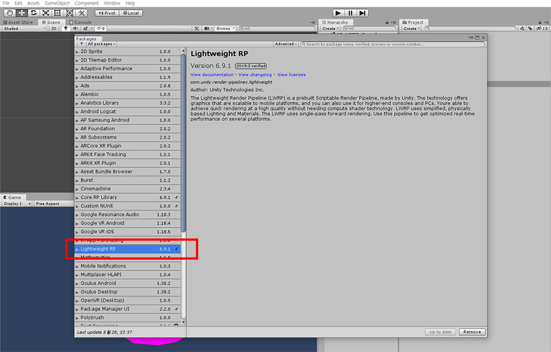
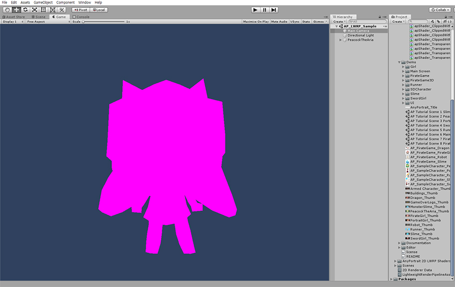
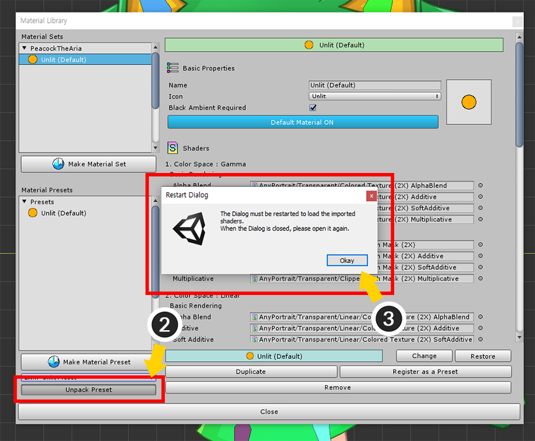
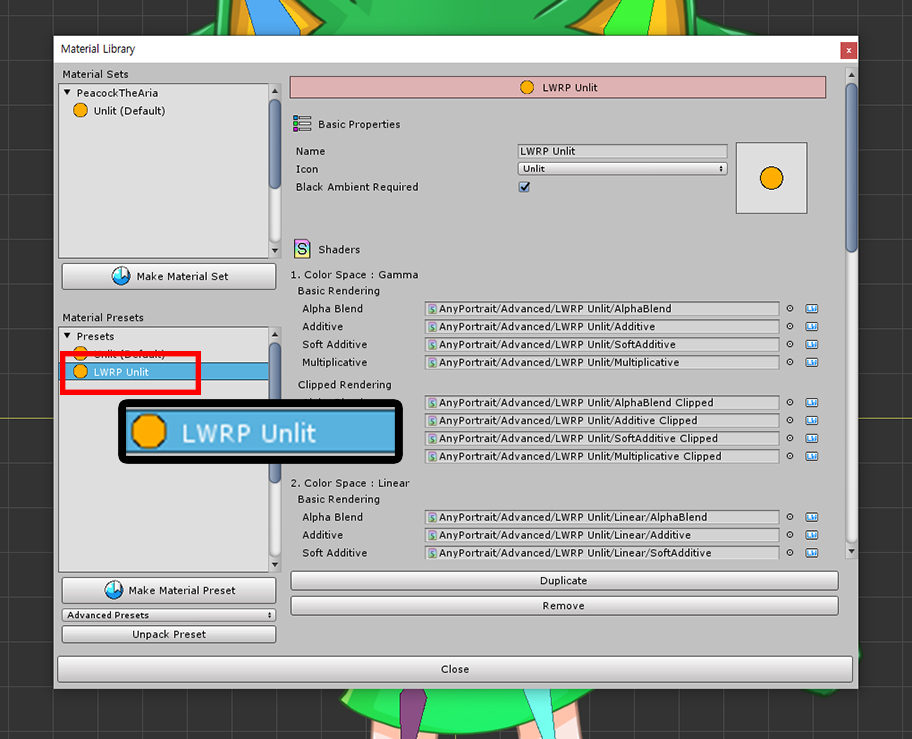
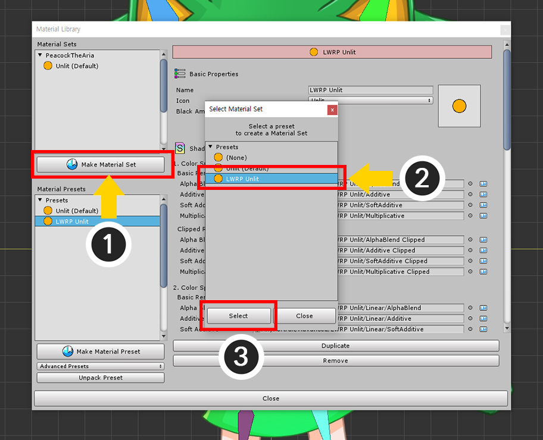
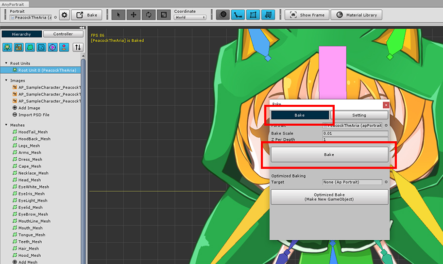
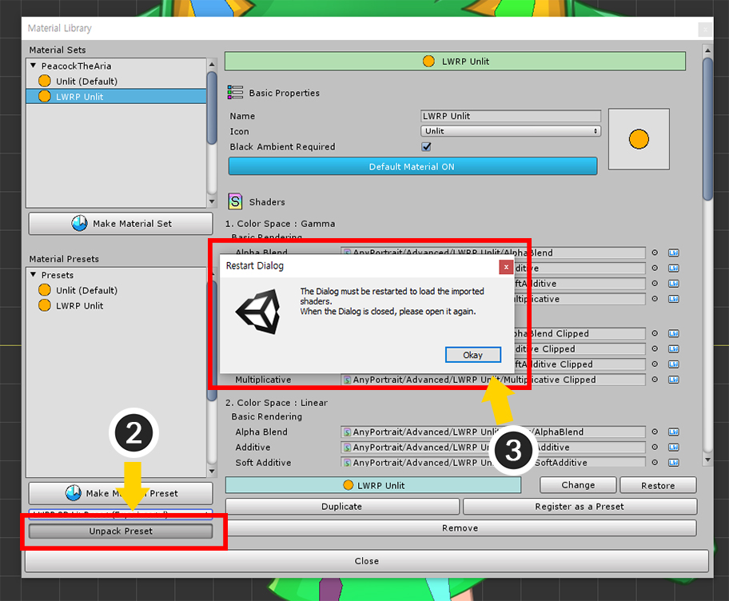
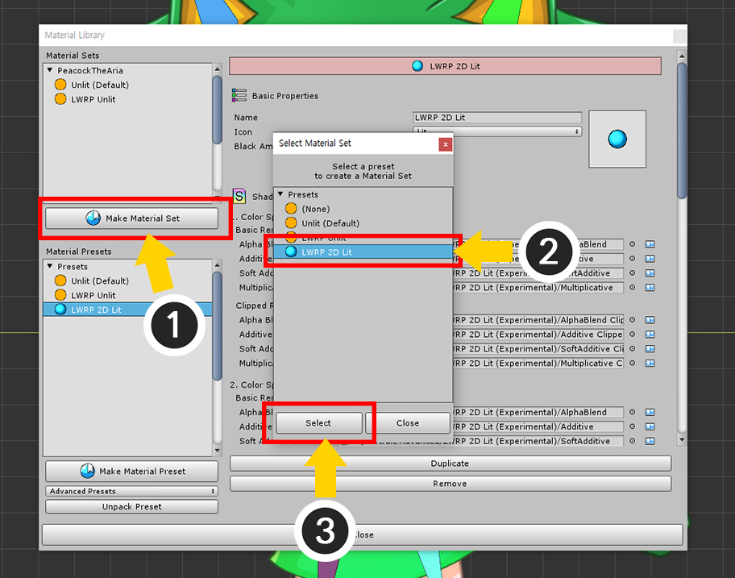
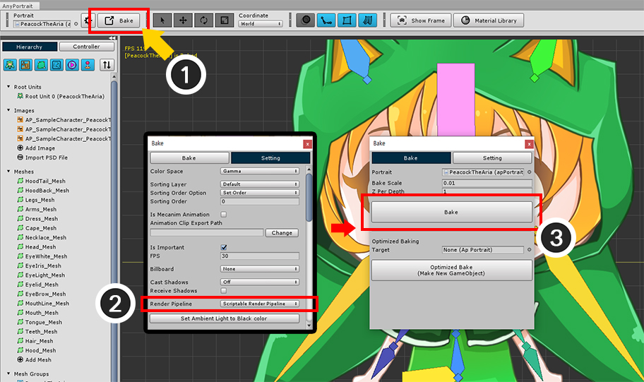

AnyPortrait > Manual > Lightweight Render Pipeline
Lightweight Render Pipeline
1.1.8
"Lightweight Render Pipeline" is a new rendering method introduced in Unity 2018 and formally adopted in Unity 2019.
It allows you to control rendering with C# scripts and provides features for high quality and optimization.
Lightweight Render Pipeline, "LWRP" for short, is a completely new rendering pipeline, which means that most existing shaders are incompatible.
Unfortunately, the basic materials provided by AnyPortrait are not compatible with LWRP.
To solve this problem, the Material Library, a feature added to AnyPortrait v1.1.7, provides materials for LWRP, and v1.1.8 also supports LWRP 2D, described below.
This page covers the process of installing and setting up materials that support LWRP.
We recommend that you refer to the following pages for further explanation.
- Material Library
- Creating Materials with Shader Graph
- Custom Shader
- About the Lightweight Render Pipeline Manual (Unity official page)

First, open the Unity Editor's Package Manager and select the Lightweight RP.
If the Lightweight RP package is not installed, an Install button appears in the lower right corner of the Package Manager window.
Installing this package allows you to use LWRP.
(Depending on the Unity version, the UI or installation method may be different.)

Create an "LWRP Asset" by selecting "Assets > Create > Rendering > Lightweight Render Pipeline > Pipeline Asset" from the menu.
Assign the created "LWRP Asset" to "Scriptable Render Pipeline Settings" under "Project Settings > Graphics" as shown in the image above.
Now, the rendering method is changed to LWRP.
(See the related page for details. This may vary by Unity version.)

LWRP does not support existing shaders, so the material will not render properly.
This issue is not just for AnyPortrait, but also for most Unity assets and materials.

Open the AnyPortrait Editor.
(1) Select Root Unit.
(2) Press the Material Library button.
(3) The Material Library window is opened.

(1) Change "Advanced Presets" to "LWRP Unlit Preset" at the bottom left of the Material library.

(2) Press the Unpack Preset button to install the selected material package.
(3) After the installation process, you need to click the Okay button in the message and open the Material Library again.

"LWRP Unlit" Preset is added.

Let's create a new Material Set.
(1) Press the Make Material Set button.
(2) Select the LWRP Unlit preset.
(3) Press the Select button to create the material set.

(4) Select the created LWRP Unlit material set.
(5) Press the Default Material button to set as the default material.

The following process is also very important.
Clipping meshes do not work properly in "Scriptable Render Pipeline (SRP)" such as LWRP.
This is because the rendering process in Unity's camera is different from the previous way.
In v1.1.8, you have the option to resolve this issue.
(1) Press the Bake button to open the dialog.
(2) Press the Setting tab.
(3) Change the value of the Render Pipeline option to "Scriptable Render Pipeline".
Note that.
This option is available starting in Unity 2019.1.
You can use SRP in Unity 2018, but due to the limitations of the features provided, clipped meshes cannot be rendered properly.

Select the Bake tab and press the Bake button.

When you open the Unity scene you will see the character render properly.
Rendering in Lightweight Render Pipeline 2D
The new feature to apply LWRP to 2D games is added in Unity 2019.
Basically, it is similar to LWRP, but LWRP 2D uses a different shader than original LWRP.
Therefore, in order to use LWRP 2D, you need to create another material and apply it.

How to set up LWRP 2D.
With LWRP enabled, change the Renderer Type of the LWRP asset to Custom.
Create a 2D Renderer Data asset, and then, assign it to the Data of the LWRP asset to switch the rendering method to the LWRP 2D.

Setting up an LWRP 2D material is almost same.
(1) Select Root Unit.
(2) Press the Material Library button.

You need to select a Material Preset to install.
(1) Select "LWRP 2D Lit Preset (Experimental)".

(2) Press Unpack Preset button to install preset package.
(3) Press the Okay button in the message and restart the Material Library.

The LWRP 2D Lit preset is installed and added.

(1) Press the Make Material Set button.
(2) Select the LWRP 2D Lit preset.
(3) Press the Select button to create the material set.

(4) Select the newly created LWRP 2D Lit material set.
(5) Press the Default Material button to set it as the default material.

(1) Press the Bake button.
(2) In the Setting tab of the Bake dialog, set the Render Pipeline option to "Scriptable Render Pipeline".
(3) Press the Bake button in the Bake tab.

If you check it in Unity, it will look black or dark.
This is because the installed preset is a lighted material, which appears dark when there is no light.
We need to add light to the scene, especially, let's take advantage of the features provided by LWRP 2D.

(1) Right-click on Hierarchy.
(2) By selecting "Light > 2D", you can select various types of "Light 2D" for LWRP 2D.
Freeform Light 2D is selected on this page.

Press the Edit Shape button to edit the shape of the light.

You can see the character is rendered pretty in LWRP 2D.